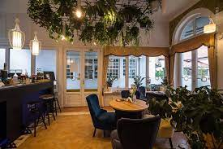

Főoldal
Sütik
Fajták
Árak
Összetevök
Kávék
Fajták
Árak
Összetevök
Üdvözlünk kedves kis kávézonkban!
1 / 3

Helység
2 / 3
Sütemények
3 / 3
Kávék
Kávék
Tovább az oldara
Az országban nálunk találhatóak a legjobb sütemények és kávék,
Minden megyében jelen vagyunk,
Házhoz is szállitunk,
Telefonszámunk: 06 1234 5678
Sütik
Tovább az oldara
Érdekeség rólunk
1997 ben nyiltunk meg egy pesti utcában, Kámán Ferenc volt az első tulajdonos.
Késöbb 2009 ben új tulajdnos lett Gosztolai Bálint aki új kávékat adot hozzá az ital laphoz.
2015 ben Maráczi Ádám a tulajdonos aki sütiket is hozzá tett a kínálathoz és ő vezette be a házhoz szállitást.